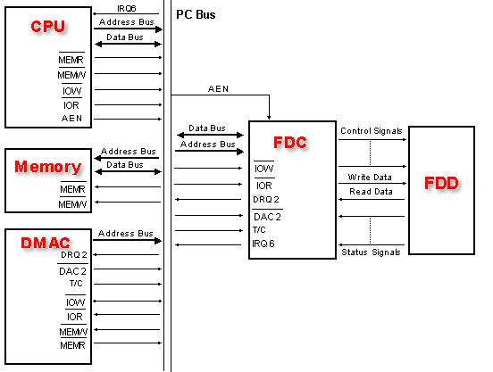
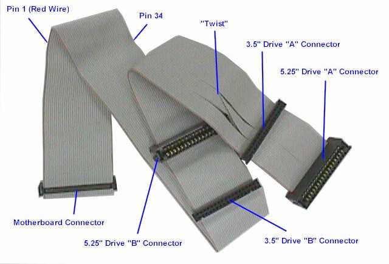

Floppy Disk Controller (FDC) Programming
8272A Floppy Disk Controller
Yey! Its finally time to work with the floppy drive! This chapter covers almost everything there is to know about the floppy drive and programming the floppy disk!
Here is what is on the menu for this chapter:
- FDC and FDD History
- Disk Layout
- CHS, LBA
- FDD Structure
- FDC Hardware
- Interfacing with the FDC
- FDC registers and commands
History
The Floppy Disk Controller (FDC) is the controller that interfaces with the Floppy Disk Drive (FDD). The PC useually uses a form of the NEC ?PD765 FDC. PS/2 useally uses a form of the Intel 82077A while the AT useally uses a form of the Intel 82072A microcontroller.
The Floppy disk drive (FDD) is a device that is capable of reading and writing data to a floppy disk.
In 1971, David L. Noble, hired by Alan Shugart, who was the IBM Direct Access Storage Product Manager, tried to develop a new storage tape format for their System/370 mainframes. IBM was looking to create something that is smaller and faster then tape drives when reloading the microcode for their Initial Control Program Load (ICPL). Nobles team worked on a product under the code name "Minnow" called a "memory disk". It was a read only, 8 inch diskette, having the capacity of 80 kilobytes. It was commercially released in 1971 and shipped with all System/370 mainframes.
When Alan Shugart left IBM and moved to Memorex, his team shipped the Memorex 650 in 1972, the first read/write floppy disk drive.
Floppy disks were invented by IBM in 8 inch, 5 and 1/4 inch and 3 1/2 inch formats.
Disk Structure
Physical Layout
Understanding the disk structure is important. Here is the layout of a floppy disk:

This is the physical layout of a generic 3-1/2" floppy disk. Here, we are looking at Head 1 (The front side), and the Sector represents 512 bytes. A Track is a collection of sectors.
Note: Remember that 1 sector is 512 bytes, and there are 18 sectors per track on floppy disks.
Looking at the above picture, remember:
- Each Track is useually divided into 512 byte sectors. On floppies, there are 18 sectors per track.
- A Cylinder is a group of tracks with the same radius (The Red tracks in the picture above are one cylinder)
- Floppy Disks have two heads (Displayed in the picture)
- There is 2880 Sectors total.
To better understand everything, we should have a look at CHS. Lets take a look at that next!
Cylinder / Head / Sector (CHS)
Sectors
A "Sector" simply represents a goupe of 512 bytes. So, Sector 1 represents the first 512 bytes of a disk.
Head
A "Head" (or Face) represents the side of the disk. Head 0 is the front side, Head 1 is the back side. Most disks only have 1 side, hence only 1 head ("Head 1")
Track
A track is one ring around the disk. In the case of floppy disks, 18 sectors span a single track.
The Cylinder number represents a track number on a single disk. In the case of a floppy disk, It represents the Track to read from.
There is 18 sectors per track. 80 tracks per side.
Understanding CHS
The floppy disk addresses using CHS format. In order to read or write from any location on disk, we must tell the FDC to move the Read/Write Head to the exact track, cylinder, and sector on the disk to read or write to.
Linear Block Addressing (LBA)
We can also provide a more abstract way of reading and writing to disks using Linear Block Addressing (LBA) instead. LBA allows us to be able to read or write to any sector on disk from sector 0-2880.
Floppy Interfacing
Software interfaces with the floppy disk drive by controlling it through a floppy disk controller. Do to differences in floppy disk controllers, I would like to focus on the original 8272A Floppy Disk Controller. The image at the beginning of this chapter shows a typical 8272A Integrated Circuit (IC) controller. This is the IC that we will look at here.
Detail: 82072A Floppy Microcontroller
The 8272A IC has 40 pins. Lets take a look at it here. While we will take a brief look at all 40 pins, we will not look at it in full detail here as that is when we cross into the electronics field.

Most of these pins are not very useful for programming the controller. Other pins are more important to understand, however. Lets take a look. For completness sake, we will look at all of the pins brefily. You will see that the FDC indirectly communicates with both the Programmable Interrupt Controller (PIC), the system bus, as well as the Direct Memory Access controller.
- RESET Pin - places the FDC in an idle state. It drives all output lines low. The Vcc pin is a +5 V power input.
- GND Pin - is the ground pin.
- CLK Pin - typical Single Phase 8 MHz Squarewave clock signal.
- RD Pin - tells the FDC that the current operating is a read operation.
- WR Pin - is simular, but for a write operation.
- These are set by the Control Bus in an I/O read/write operation by software.
- CS Pin - Chip Select
- DB0 - DB7 Pins - bidirectional 8 bit data bus. It connects indirectly to the systems primary Data Bus.
- A0 Pin - Data/Status Register Select pin. If it is high (1), it tells the FDC to place the contents in its Data Register to the data bus. If the line is low (0), it copies the contents of the Status Register to the data bus. This is done through the output data bus pins DB0 - DB7, which in turn is through the systems data bus which can be read by software.
- DRQ Pin - Data Direct Memory Access (DMA) Request pin. If this line is high (1), the FDC is making a DMA request.
- DACK Pin - DMA Acknowledge pin. When the controller is performing a DMA transfer, this line will be low (0).
- TC Pin - When the DMA transfer is completed, the FDC sets the Terminal Count pin, TC to high (1).
- IDX Pin - high when the FDC is at the beginning of a disk track.
- INT Pin - is high (1) when the FDC sends an Interrupt Request (IR). This line is indirecty connected to the IR6 on the Programmable Interrupt Controller (PIC).
- RW/Seek Pin - Sets seek mode of read/write mode. 1: Seek mode, 0: Read/Write mode.
- LCT/DIR Pin - Low current/Direction pin.
- FR/STP Pin - Fault reset/Step pin.
- HDL Pin - Head Load pin.Command causes the Read/Write head in the FDD to contact the diskette
- RDY Pin - Ready pin. Indicates that the FDD is ready to send or recieve data
- WP/TS Pin - Write protect/Two side pin. In Read/Write mode, set high if media is write protected. If seek mode, set high if media is two sided.
- FLT/TRK0 Pin - Fault/Track 0 pin. In Read/Write mode, set high on a detected FDD fault.
- PS0 - PS2 Pins - Precompensation (Pre-shift) pins. Write precompensation status during MFM mode.
- WR DATA Pin - Write data pin
- RD DATA Pin - Read data pin
- DS0 - DS1 Pins - Drive select pins
- HDSEL Pin - Head Select Pin. When high (1), the FDC sets the FDD to access Head 1. When low, it is head 0.
- MFM Pin - When high, FDC is in MFM mode. If low (0), it operates in FM mode.
- WE Pin - Write enable pin.
- VCO Pin - VCO Sync pin. When 0, inhibits VCO in PLL. When 1, enables VCO.
- DW Pin - Data Window pin. Generated by PLL, used for sample data from the FDD.
- WR CLK Pin - Write Clock
The FDC can operate with or without a Direct Memory Access (DMA) controller. If it is operating in a non DMA mode, it will generate IRQ 6 for every transfer of a data byte between the processor and the FDC. In DMA mode, the processor will load a command into the FDC and all data transfers will occur under control of the FDC and DMA controllers.
This is important! You do not need to know all of the FDC pins. Rather, just remember that the FDC communicates with three primary controllers. The first is one of possibly four Floppy Disk Drives (FDD) internal controllers, the programmable interrupt controller (PIC), and the Direct Memory Access (DMA) controller. Software communicates with the FDC by the processors standard IN/OUT port i/o instructions.
Several registers in the FDC are mapped into the processors i/o address space. As with standard I/O port reads, during an in and out operation, the processor sets the READ or WRITE line on the control bus, and the port address on the address bus. This is done on the system bus or the Industry Standard Architecture (ISA) bus.
On newer hardware, the FDC is not directly connected to the ISA bus, but is rather integrated as a Super I/O IC and communicates with the processor through the Super I/O's Low Pin Count bus.
Okay! We know how the software can communicate with the FDC. Where does the PIC and DMA come into play?
Looking at the pin listing above, we can see that the FDC has a pin called INT. This line is indirectly connected to the Programmable Interrupt Controller IR 6 line. The FDC will pull this line high (1) whenever a byte of data is ready to be read or written. This also pulls the PIC IR 6 line high. From here, the PIC takes control. It masks out the other lines and determins if it can be services. It notifies the processor of an interrupt by activating the processors Interrupt Acknowledge (INTA) pin. After the processor verifies that it is safe to service the interrupt, it resets the INTA line to ackowledge the PIC to proceed. The PIC places the interrupt vector that this IRQ is mapped to use (set up during initializing the PIC). The processor takes the IRQ, gets its address from the idtr, and voila - our interrupt is called.
The FDC can also be programmed to operate in DMA mode. The DMA is a controller that we have not looked at yet. Because of this, I do not want to get too involved with it. However we may go over it in the next chapter for completness. The FDC is connected to DMA channel 2.

Thats all there is to it for the FDC hardware. Their can be multiple FDCs inside of a computer system. Each FDC can connect up to 4 Floppy Disk Drives (FDDs). This is important! Alot of times when communicating with a FDC, you have to select which FDD that the request is for.
Floppy Interface Cable
The FDC communicates with a FDD through a Floppy Interface Cable, which is a form of a Parallel ATA (PATA) cable also known as an Integrated Drive Electronics (IDE) cable which evolved from Western Digital.

You should notice a twist in the above cable. That will be described a little shortley. This cable has 40 pins. Through these 40 pins, the FDC can talk to different FDD's that are connected to the cable.
Some registers that are used to communicate with the FDC allow you to detect the input pins of the controller and the cable. Because of this, we should probably at least take a small glance at the 40 lines of the cable.
Floppy Interface Cable Pins
| Pin | Description |
|---|---|
| 0 | Reset |
| 1 | Ground |
| 2 | Data pin 7 |
| 3 | Data pin 8 |
| 4 | Data pin 6 |
| 5 | Data pin 9 |
| 6 | Data pin 5 |
| 7 | Data pin 10 |
| 8 | Data pin 4 |
| 9 | Data pin 11 |
| 10 | Data pin 3 |
| 11 | Data pin 12 |
| 12 | Data pin 2 |
| 13 | Data pin 13 |
| 14 | Data pin 1 |
| 15 | Data pin 14 |
| 16 | Data pin 0 |
| 17 | Data pin 15 |
| 18 | Ground |
| 19 | Key or Vcc_in |
| 20 | DDRQ |
| 21 | Ground |
| 22 | I/O Write |
| 23 | Ground |
| 24 | I/O Read |
| 25 | Ground |
| 26 | IOCHRDY |
| 27 | Cable Select (CS) |
| 28 | DDACK |
| 29 | Ground |
| 30 | Interrupt |
| 31 | (No connection) |
| 32 | Address 1 |
| 33 | GPIO_DMA66_Detect |
| 34 | Address 0 |
| 35 | Address 2 |
| 36 | Chip Select 1 |
| 37 | Chip Select 3 |
| 38 | Activity |
| 39 | Ground |
More to be added later.
FDC Programming
FDC Operating Modes
Most FDC's these days are more advanced then the original 8272 microcontroller. To acheive backward compatability, newer FDC's add additional pins to the controller and allow different registers to be communicated with when operating in a specific mode. For example, the Status Register A mode is only accesable when the controller is running in PC-AT mode. Upon controller reset, the controller operates in the default 82077A mode.
Waiting for an IRQ
Remember that the FDC uses IRQ 6? The FDC will send a byte after the completion of a read or write command, or, depending on its mode, for every byte transferred. It will also send an IRQ when the controller is reset during initialization.
For our purposes, we will be operating the FDC in a DMA mode. Basically what this means is that we will only be getting an interrupt whenever a read, write, seek, or calibrate command completes as well as during initialization.
In all cases, however, this means that we will need to wait for an IRQ to fire so we know the command completes. A way for us to do this is to have the IRQ set a global when it fires, and provide an irq_wait like function that waits for the IRQ, and resets the global when it fires.
Lets do that now. First the IRQ:
const int FLOPPY_IRQ = 6;
//! set when IRQ fires
static volatile uint8_t _FloppyDiskIRQ = 0;
void _cdecl i86_flpy_irq () {
_asm add esp, 12
_asm pushad
_asm cli
//! irq fired
_FloppyDiskIRQ = 1;
//! tell hal we are done
interruptdone( FLOPPY_IRQ );
_asm sti
_asm popad
_asm iretd
}
This looks as simple as the IRQ in the PIT, doesnt it? 😀 Oh, right, and now we wait:
//! wait for irq to fire
inline void flpydsk_wait_irq () {
//! wait for irq to fire
while ( _FloppyDiskIRQ == 0)
;
_FloppyDiskIRQ = 0;
}
Simple enough. So, assuming we send a command, like a read or write command, just call flpydsk_wait_irq(). When it completes, you know the command finished and its safe to continue. Cool, huh? 😉
DMA
What? We are programming the FDC in DMA mode? But we have not covered the DMA yet! Yes, yes indeed this poses a problem.
I was originally going to program the FDC in Non-DMA mode. However, while this might work in some cases, alot of emulators and even some hardware do not support it anymore. Because of this, to retain portability, I decided that the best bet is to stick with using the DMA (Direct Memory Access Controller [DMAC]).
However, because we have not covered the DMA yet in detail, we run into a problem. I figure, rather then throwing a whole DMA interface to you without explination, we can just hack together three basic DMA routines and rewrite them more throughley later 😉
flpydsk_initialize_dma basically creates a buffer for the DMA to use at physical address 0x1000 - 0x10000 (64k). When we read a sector from disk, the DMA will put the sector data to this location so please be sure that nothing is there as it will be overwritten. You can choose another location if you like, however there are some rules:
- The buffer cannot cross 64k boundaries. It should stay at a 64k boundery for best performance
- The area of memory it writes to must be idenitity mapped or its frame address mapped to a page. The DMA always works with physical memory
The demo uses 0x1000 + 64k for the buffer so you should keep it there if you dont feel confortable changing it.
dma_read and dma_write just tells the DMA to start reading or writing the data that the FDC sends it. This will be the sector that we tell the FDC to read or write. For example, if we tell the FDC to read a sector, it will give the sector data to the DMA to be placed in the buffer that we set it to (which is at 0x1000). Cool, huh?
//! initialize DMA to use phys addr 1k-64k
void flpydsk_initialize_dma () {
outportb (0x0a,0x06); //mask dma channel 2
outportb (0xd8,0xff); //reset master flip-flop
outportb (0x04, 0); //address=0x1000
outportb (0x04, 0x10);
outportb (0xd8, 0xff); //reset master flip-flop
outportb (0x05, 0xff); //count to 0x23ff (number of bytes in a 3.5" floppy disk track)
outportb (0x05, 0x23);
outportb (0x80, 0); //external page register = 0
outportb (0x0a, 0x02); //unmask dma channel 2
}
//! prepare the DMA for read transfer
void flpydsk_dma_read () {
outportb (0x0a, 0x06); //mask dma channel 2
outportb (0x0b, 0x56); //single transfer, address increment, autoinit, read, channel 2
outportb (0x0a, 0x02); //unmask dma channel 2
}
//! prepare the DMA for write transfer
void flpydsk_dma_write () {
outportb (0x0a, 0x06); //mask dma channel 2
outportb (0x0b, 0x5a); //single transfer, address increment, autoinit, write, channel 2
outportb (0x0a, 0x02); //unmask dma channel 2
}
If you dont understand the above code, dont worry. Everything reguarding the DMA will be rewritten and explained in the next tutorial when we cover the DMA in more detail.
FDC Port mapping
The FDC has four external registers that are mapped into the i86 I/O address space. These can be accessed by software through standard I/O instructions. I bolded these registers.
Some systems may provide more external registers to their FDC's then the primary four.
The second FDC is typically mapped to I/O ports 0x370 - 0x377.
Because there are two sets of ports for two different FDC's, this table will include both port sets.
Floppy Disk Controller Ports
Primary FDC Registers
| Port (FDC 0) | Port (FDC 1) | Read/Write | Descripton |
|---|---|---|---|
| 0x3F2 | 0x372 | Write Only | Digital Output Register (DOR) |
| 0x3F4 | 0x374 | Read Only | Main Status Register (MSR) |
| 0x3F5 | 0x375 | Read / Write | Data Register |
| 0x3F7 | 0x377 | Read Only | AT only. Configuation Control Register (CCR) |
| 0x3F7 | 0x377 | Write Only | AT only. Digital Input Register (DIR) |
Other FDC Registers
| Port (FDC 0) | Port (FDC 1) | Read/Write | Descripton |
|---|---|---|---|
| 0x3F0 | 0x370 | Read Only | PS/2 only. Status Register A (SRA) |
| 0x3F1 | 0x371 | Read Only | PS/2 only. Status Register B (SRB) |
| 0x3F4 | 0x374 | Write Only | PS/2 only. Data Rate Select Register (DSR) |
We will take a look at the registers closer - bit by bit - in the next section. Well, the important ones anyways. I may decide to update this chapter covering the other registers for completness purposes, though. For now, we will only focus on the first four registers shown above.
Remember that all of this code is in the demo at the end of this chapter.
enum FLPYDSK_IO {
FLPYDSK_DOR = 0x3f2,
FLPYDSK_MSR = 0x3f4,
FLPYDSK_FIFO = 0x3f5, //data register
FLPYDSK_CTRL = 0x3f7
};
Registers
Status Register A (SRA) (PS2 Mode Only)
You do not need to know this register. It is here for completness only.
This is a read only register that monitors the state of several interface pins on the controller. It is not accessable when the controller is in PC-AT Mode. This is a read only register.
The exact format of this register may depend on the model of the controller.
- Bit 0 DIR
- Bit 1 WP
- Bit 2 INDX
- Bit 3 HDSEL
- Bit 4 TRKO
- Bit 5 STEP Flip/Flop
- Bit 6 DRV2
- Bit 7 INTERRUPT line state (interrupt pending)
Warning: These bits can change between controller models.
Do not worry if this register seems complex; it can be without experience in electronics. It is here for completeness only and will not be used in the series.
Status Register B (SRB) (PS/2 Mode Only)
You do not need to know this register. It is here for completness only.
Simular to the above register, this allows us to monitor the state of several lines of the FDC. It is not accessable when the FDC is in PC-AT Mode. This is a read only register.
- Bit 0 MOT EN0 (Motor Enable 0)
- Bit 1 MOT EN1 (Motor Enable 1)
- Bit 2 WE Flip/Flop
- Bit 3 Read Data (RDDATA) Flip/Flop
- Bit 4 Write Data (WRDATA) Flip/Flop
- Bit 5 Drive Select 0
- Bit 6 Undefined; Always 1
- Bit 7 Undefined; Always 1
Warning: These bits can change between controller models.
Do not worry if this register seems complex; it can be without experience in electronics. It is here for completeness only and will not be used in the series.
Data Rate Select Register (DSR)
You do not need to know this register. It is here for completness only.
This is a write only register that allow you to change the timings of the drive control signals. It is used by writing to I/O port 0x3f4 (FDC 0) or 0x374 (FDC 1).
This is an 8 bit register. It has the following format:
- Bit 0 DRATE SEL0
- Bit 1 DRATE SEL1
- Bit 2 PRE-COMP 0
- Bit 3 PRE-COMP 1
- Bit 4 PRE-COMP 2
- Bit 5 Must be 0
- Bit 6 POWER DOWN: Deactivates internal clocks and shuts off the internal oscillator
- Bit 7 S/W RESET: Reset the internal oscillator
PRE-COMP 0 - PRE-COMP 2 are a little complex. These adjusts the WRDATA output pins for the bit shifting that can occur on magnetic media, such as floppy drives. To adjust the precompensation delay, we can set these bits to one of the following:
- 000 Default (250-500 Kbps, 125 ns. 1 Mbps, 41.67 ns)
- 110 250 ns
- 101 208.33 ns
- 100 166.67 ns
- 011 125 ns
- 010 83.34 ns
- 001 41.67 ns
- 111 Disabled
DRATE SEL0 - DERATE SEL 1 are used to set the data rate. Valid values are shown below.
- 00 500 Kbps
- 10 250 Kbps
- 01 300 Kbps
- 11 1 Mbps
Warning: Setting Data Rates greater then drive can handle may cause errors.
Digital Output Register (DOR)
Yey! The first useful register! This one is important to know.
This is a write only register that allows you to control different functions of the FDC, such as the FDD motor control, operation mode (DMA and IRQ), reset, and drive. It has the format:
- Bits 0-1 DR1, DR2
- 00 - Drive 0
- 01 - Drive 1
- 10 - Drive 2
- 11 - Drive 3
- Bit 2 REST
- 0 - Reset controller
- 1 - Controller enabled
- Bit 3 Mode
- 0 - IRQ channel
- 1 - DMA mode
- Bits 4 - 7 Motor Control (Drives 0 - 3)
- 0 - Stop Motor for drive
- 1 - Start Motor for drive
This is an easy one! Basically when sending a command to control the functionality of the FDC, just build up a bit pattern to select what drive this is for (Remember that a single FDC can communicate with four FDD's!), the controller reset status, mode of operation (Remeber that the FDC can operate in both DMA and IRQ modes?) and the status of that particular FDD internal motor.
Here is an example. Lets say we want to start up the motor for the first floppy drive (FDD 0). Starting the motor for the FDD is needed before performing any read or write operations to it! To start it, just set the bit (4-7) that corrosponds to the drive you want to start or stop the motor. Keeping all other bits at 0 will be a normal operation (IRQ mode, reset controller.) Knowing that the DOR is mapped to the processors i/o address space at port 0x3f2, this becomes very simple. First, we will create bit masks for the register to increase readability. Rememeber that all of this code is also in the demo at the end of this tutorial.
enum FLPYDSK_DOR_MASK {
FLPYDSK_DOR_MASK_DRIVE0 = 0, //00000000 = here for completeness sake
FLPYDSK_DOR_MASK_DRIVE1 = 1, //00000001
FLPYDSK_DOR_MASK_DRIVE2 = 2, //00000010
FLPYDSK_DOR_MASK_DRIVE3 = 3, //00000011
FLPYDSK_DOR_MASK_RESET = 4, //00000100
FLPYDSK_DOR_MASK_DMA = 8, //00001000
FLPYDSK_DOR_MASK_DRIVE0_MOTOR = 16, //00010000
FLPYDSK_DOR_MASK_DRIVE1_MOTOR = 32, //00100000
FLPYDSK_DOR_MASK_DRIVE2_MOTOR = 64, //01000000
FLPYDSK_DOR_MASK_DRIVE3_MOTOR = 128 //10000000
};
Using the above bit masks, we can just bitwise OR the different bits that we would like to set. So, to start the motor for floppy drive 0:
outportb (FLPYDSK_DOR, FLPYDSK_DOR_MASK_DRIVE0_MOTOR | FLPYDSK_DOR_MASK_RESET);
Remember that FLPYDSK_DOR was defined ealier as 0x3f2, which is the i/o address of the DOR FDC register. The above also resets the controller.
To turn this same motor off, just send the same command but without the motor bit set:
outportb (FLPYDSK_DOR, FLPYDSK_DOR_MASK_RESET);
Warning: Give the motor some time to start up! Remember that the internal FDD motor is mechanical. Like all mechanical devices, they tend to be slower then the speed of the running software. Because of this, whenever starting up a FDD motor, always give it a little time to spin up before attempting to read or write to it.
The DOR is a write only register. To inforce this, lets create a routine for it:
void flpydsk_write_dor (uint8_t val ) {
//! write the digital output register
outportb (FLPYDSK_DOR, val);
}
Lets move on to the next important register!
Main Status Register (MSR)
The Main Status Register (MSR) follows a gasp! specific bit format! Bet you did not see that one coming! Okay, okay, lets get back on track here (pun intended). Here is the format of the MSR:
- Bit 0 - FDD 0: 1 if FDD is busy in seek mode
- Bit 1 - FDD 1: 1 if FDD is busy in seek mode
- Bit 2 - FDD 2: 1 if FDD is busy in seek mode
- Bit 3 - FDD 3: 1 if FDD is busy in seek mode
- 0: The selected FDD is not busy
- 1: The selected FDD is busy
- Bit 4 - FDC Busy; Read or Write command in progress
- 0: Not busy
- 1: Busy
- Bit 5 - FDC in Non DMA mode
- 0: FDC in DMA mode
- 1: FDC not in DMA mode
- Bit 6 - DIO: direction of data transfer between the FDC IC and the CPU
- 0: FDC expecting data from CPU
- 1: FDC has data for CPU
- Bit 7 - RQM: Data register is ready for data transfer
- 0: Data register not ready
- 1: Data register ready
This MSR is a simple one. It containes the current status information for the FDC and disk drives. Before sending a command or reading from the FDD, we will need to always check the current status of the FDC to insure it is ready.
Here is an example of reading from this MSR to see if its busy. We first define the bit masks that will be used in the code. Notice how it follows the format shown above.
enum FLPYDSK_MSR_MASK {
FLPYDSK_MSR_MASK_DRIVE1_POS_MODE = 1, //00000001
FLPYDSK_MSR_MASK_DRIVE2_POS_MODE = 2, //00000010
FLPYDSK_MSR_MASK_DRIVE3_POS_MODE = 4, //00000100
FLPYDSK_MSR_MASK_DRIVE4_POS_MODE = 8, //00001000
FLPYDSK_MSR_MASK_BUSY = 16, //00010000
FLPYDSK_MSR_MASK_DMA = 32, //00100000
FLPYDSK_MSR_MASK_DATAIO = 64, //01000000
FLPYDSK_MSR_MASK_DATAREG = 128 //10000000
};
Easy, huh? So lets test if the FDC is busy (BUSY flag is set.) Knowing that FLPYDSR_MSR is 0x3f4, the i/o port address for the MSR, all we need to do is this:
if ( inportb (FLPYDSK_MSR) & FLPYDSK_MSR_MASK_BUSY )
//! FDC is busy
When sending a read or write command, all we need to do is wait until this bit is 0. Cool, huh?
To make readability easier, I decided to hide this in a routine so here it is. This routine just returns the status of the FDC.
uint8_t flpydsk_read_status () {
//! just return main status register
return inportb (FLPYDSK_MSR);
}
Tape Drive Register (TDR)
You do not need to know this register. It is here for completness only.
This register allows us to assign tape drive support to a specific drive during initialization of that drive. This is a read/write register and is 8 bits in size. However only the first two bits are defined. They both are used to select between drive 0 - 3. Selecting Drive 0 is not allowed as that is reserved for the floppy boot device. Because of this, it is not in the bit list shown below.
- 00: None.
- 01: Drive 1
- 10: Drive 2
- 11: Drive 3
Only a hardware reset will reset this register. A software reset has no effect. Do not worry if you dont know much about tape drives - this register does not apply to us and will not be used in the series. It is here only for completeness. 😀
Data Register
This is a 8 or 16 bit read/write register. The actual size of the register is specific on the type of controller. All command paramaters and disk data transfers are read to and written from the data register. This register does not follow a specific bit format and is used for generic data. It is accessed through I/O port 0x3f5 (FDC 0) or 0x375 (FDC 1).
Note: Before reading or writing this register, you should always insure it is valid by first reading its status in the Master Status Register (MSR).
Remember: All command bytes and command paramaters are sent to the FDC through this register! You will see examples of this in the command section below, so dont worry to much about it yet.
If an invalid command was issued, the value returned from the data register is 0x80.
The following routines read from this register and are use in the demo. It attemps to wait until the data register is safe to read or write to, then it either reads it (read_data function) or write it (send_command function).
void flpydsk_send_command (uint8_t cmd) {
//! wait until data register is ready. We send commands to the data register
for (int i = 0; i < 500; i++ )
if ( flpydsk_read_status () & FLPYDSK_MSR_MASK_DATAREG )
return outportb (FLPYDSK_FIFO, cmd);
}
uint8_t flpydsk_read_data () {
//! same as above function but returns data register for reading
for (int i = 0; i < 500; i++ )
if ( flpydsk_read_status () & FLPYDSK_MSR_MASK_DATAREG )
return inportb (FLPYDSK_FIFO);
}
Digital Input Register (DIR)
You do not need to know this register. It is here for completness only.
Okay, there was a digital output register (DOR) so I am sure you seen this one coming 😀 This is a read only register in all operation modes of the controller. Only bit 7 is defined when running in PC-AT Mode, all other bits are undefined and should not be used. In other operation modes, Bit 7 is undefined.
Bit 7 (DSK CHG) monitors the DSK CHG pin of the FDC. Looking at our pin layout at the beginning of this chapter, you will see that there is no DSK CHG pin. This has to do with the differences between the newer FDC models and the original model. Newer models added and changed different bits in this register to monitor newer pins on the FDC, such as DMA GATE, DRATE SEL0/1, etc. The values of this register is specific to the operation mode of the FDC.
Note that the bits in this register can change between models.
Configuation Control Register (CCR)
In PC/AT Mode, this register is known as the Data Rate Select Register (DSR) and only has the first two bits set (Bit 0=DRATE SEL0, Bit 1=DRATE SEL1.) This was listed in a table in the DSR register section. Lets take another look...
- 00 500 Kbps
- 10 250 Kbps
- 01 300 Kbps
- 11 1 Mbps
Bit 2 is NOPREC in Model 30/CCR modes and has no function. Other bits are undefined and may change depending on controller.
Like the other registers, I created a routine so we can write to this register.
void flpydsk_write_ccr (uint8_t val) {
//! write the configuation control
outportb (FLPYDSK_CTRL, val);
}
Commands
Abstract
Commands are used to control a FDD connected to the FDC for different operations, like reading and writing. They are written to the data register over the data bus (D0-D7) pins during a write operation (IO and WRITE control lines are set on the control bus.) In other words, a OUT assembly language instruction to the data register at port 0x3f5 (FDC 0) or 0x375 (FDC 1.)
Warning: Before sending a command or paramamter byte, insure the data register is ready to recieve data by testing bit 7 of the Main Status Register (MSR) first.
There are thirteen (or more depending on controller) commands. Each command can be 1 to 9 bytes in size. The FDC knows how many bytes to expect from the first command byte. That is, the first byte is the actual command that tells the FDC what we want it to do. The FDC knows how many more bytes to expect from this command (The command paramaters.)
Commands will only operate on a single head of the track. If you want to operate on both heads, you need to set the Multiple Track Bit. Alot of these commands follow bit formats (Will be shown below). This is where things get complicated.
A command byte only uses the low 4 bits of the byte for the actual command (can be more.) The high bits of these command bytes are for optional settings for the command. I call these extended command bits but it does not have an official name. There is a couple of these bits that are common for alot of the commands that we will need to use. We will look at these bits in the command byte later.
Okay, first lets take a look the command listing. We will then look at each one separately. Notice how they all only use the first 4 bits of the command byte.
enum FLPYDSK_CMD {
FDC_CMD_READ_TRACK = 2,
FDC_CMD_SPECIFY = 3,
FDC_CMD_CHECK_STAT = 4,
FDC_CMD_WRITE_SECT = 5,
FDC_CMD_READ_SECT = 6,
FDC_CMD_CALIBRATE = 7,
FDC_CMD_CHECK_INT = 8,
FDC_CMD_WRITE_DEL_S = 9,
FDC_CMD_READ_ID_S = 0xa,
FDC_CMD_READ_DEL_S = 0xc,
FDC_CMD_FORMAT_TRACK = 0xd,
FDC_CMD_SEEK = 0xf
};
To send a command to the FDC, remember that we have to write it to the data register, aka the FIFO. To do this, we first need to wait until the data register is ready by checking the bit in the MSR. Assuming flpydsk_read_status () just returns the value from the MSR, lets hide all of this inside of a simpler method:
void flpydsk_send_command (uint8_t cmd) {
//! wait until data register is ready. We send commands to the data register
for (int i = 0; i < 500; i++ )
if ( flpydsk_read_status () & FLPYDSK_MSR_MASK_DATAREG )
return outportb (FLPYDSK_FIFO, cmd);
}
Extended Command Bits
Some of these commands require you to pass several bytes before the command is executed. Others return several bytes. To make things easier to read, I have listed all of the commands, formats, and paramater bytes in tables. Each command comes with an explination and an example routine.
Okay, now remember when we mentioned exteneded command bits and how the commands above are only four bits? The upper four bits can be used for different things and purposes.
When describing the format of a command, we represent an extended bit with a character (like M or F.) For example, the Write Sector command has the format M F 0 0 0 1 1 0, where the first four bits (0 1 1 0) are the command byte and the top four bits, M F 0 0 represent different settings. M is set for multitrack, F to select what density mode to operate in for the command.
Here is a list of common bits:
- M - MultiTrack Operation
- 0: Operate on one track of the cylinder
- 1: Operate on both tracks of the cylinder
- F - FM/MFM Mode Setting
- 0: Operate in FM (Single Density) mode
- 1: Operate in MFM (Double Density) mode
- S - Skip Mode Setting
- 0: Do not skip deleted data address marks
- 1: Skip deleted data address marks
- HD - Head Number
- DR0 - DR1 - Drive Number Bits (2 bits for up to 4 drives)
The M, F, and S bits are very common to alot of the commands, so I decided to stick them in a nice enumeration. To set them, just bitwise OR these settings with the command that you would like to use.
enum FLPYDSK_CMD_EXT {
FDC_CMD_EXT_SKIP = 0x20, //00100000
FDC_CMD_EXT_DENSITY = 0x40, //01000000
FDC_CMD_EXT_MULTITRACK = 0x80 //10000000
};
GAP 3
GAP 3 referrs to the space between sectors on the physical disk. It is a type of GPL (Gap Length).
enum FLPYDSK_GAP3_LENGTH {
FLPYDSK_GAP3_LENGTH_STD = 42,
FLPYDSK_GAP3_LENGTH_5_14 = 32,
FLPYDSK_GAP3_LENGTH_3_5 = 27
};
Some commands require us to pass the GAP 3 code, so there it is 😀
Bytes Per Sector
Some commands require us to pass in the bytes per sector. These cannot be any size, however, and always follows a formula:
2^n * 128, where ^ denotes "to the power of"
n is a number from 0-7. It cannot go higher then 7, as 2^7 * 128 = 16384 (16 kbytes). It is possible to select up to 16 Kbytes per sector on the FDC. Most drives may not support it, however.
Our list has the most common:
enum FLPYDSK_SECTOR_DTL {
FLPYDSK_SECTOR_DTL_128 = 0,
FLPYDSK_SECTOR_DTL_256 = 1,
FLPYDSK_SECTOR_DTL_512 = 2,
FLPYDSK_SECTOR_DTL_1024 = 4
};
...So, if a command requires us to pass the number of bytes per sector, dont put 512! rather, put FLPYDSK_SECTOR_DTL_512, which is 2.
How to pass paramaters to commands
If you recall, alot of commands require us to pass paramaters to it. To pass the paramaters, simply send them the same way the command was sent. For example, the specify command requires us to pass two paramaters to it. The command wont start without it so...
flpydsk_send_command (FDC_CMD_SPECIFY);
flpydsk_send_command (data);
flpydsk_send_command (data2);
Thats all there is to it 😉
How to get return values from commands
Unlike functions in programming in which you can ignore return values, the FDC requires for them to be processed in some way. Granted, you can still ignore them, but you must get them from the FDC. The FDC wont allow any more commands until it is done.
If the command returns data, it will be returned -- one at a time -- in the FIFO (Data register). So, to read them, you must continually read the FIFO to get all of the returned data.
Note: If a command returns data, it will send an interrupt that you must wait for. This is how you will know when the command is done and that it is safe to read the return values from the FIFO.
A good example of return values is the read sectors command. It requires us to wait for an IRQ so we know it completes, and returns 7 bytes. So to read all of the returned data bytes, we have to read from the data register one at a time:
for (int j=0; j<7; j++)
flpydsk_read_data ();
Of course, for error checking purposes you should actually check some of the return values.
Write Sector
- Format: M F 0 0 0 1 1 0
- Paramaters:
- x x x x x HD DR DR0
- Cylinder
- Head
- Sector Number
- Sector Size
- Track Length
- Length of GAP3
- Data Length
- Return:
- Return byte 0: ST0
- Return byte 1: ST1
- Return byte 2: ST2
- Return byte 3: Current cylinder
- Return byte 4: Current head
- Return byte 5: Sector number
- Return byte 6: Sector size
This command reads a sector from a FDD. For every byte in the sector, the FDC issues interrupt 6 and places the byte read from the disk into the data register so that we can read it in.
Read Sector
- Format: M F S 0 0 1 1 0
- Paramaters:
- x x x x x HD DR1 DR0 = HD=head DR0/DR1=Disk
- Cylinder
- Head
- Sector Number
- Sector Size
- Track Length
- Length of GAP3
- Data Length
- Return:
- Return byte 0: ST0
- Return byte 1: ST1
- Return byte 2: ST2
- Return byte 3: Current cylinder
- Return byte 4: Current head
- Return byte 5: Sector number
- Return byte 6: Sector size
This command reads a sector from a FDD. For every byte in the sector, the FDC issues interrupt 6 and places the byte read from the disk into the data register so that we can read it in.
The following is the routine used in the demo. It first sets up the DMA to prepare for a read operation. It then executes the read sector command (FDC_CMD_READ_SECT) setting the commands M, F, and S bits with it (Multitrack read, double density, skip deleted address marks. Please see above for a list of all of these.)
Afterwords, it passes all of the commands paramaters to it to begin the read command. The sector size paramater is FLPYDSK_SECTOR_DTL_512 (bytes per sector), which, if you recall, is the value 2 (Please see the above Bytes per sector section for details.) Next paramater is the sectors per track (18). The next paramater is the GAP 3 length. We pass the value of the standard 3-1/2" floppy disk GAP 3 length (FLPYDSK_GAP3_LENGTH_3_5, which is 27).
The Data Length paramater byte is only valid if the sector size is 0. Else, it should be 0xff.
Because this command sends an IRQ after completion, we need to wait for the IRQ.
void flpydsk_read_sector_imp (uint8_t head, uint8_t track, uint8_t sector) {
uint32_t st0, cyl;
//! set the DMA for read transfer
flpydsk_dma_read ();
//! read in a sector
flpydsk_send_command (
FDC_CMD_READ_SECT | FDC_CMD_EXT_MULTITRACK |
FDC_CMD_EXT_SKIP | FDC_CMD_EXT_DENSITY);
flpydsk_send_command ( head << 2 | _CurrentDrive );
flpydsk_send_command ( track);
flpydsk_send_command ( head);
flpydsk_send_command ( sector);
flpydsk_send_command ( FLPYDSK_SECTOR_DTL_512 );
flpydsk_send_command (
( ( sector + 1 ) >= FLPY_SECTORS_PER_TRACK )
? FLPY_SECTORS_PER_TRACK : sector + 1 );
flpydsk_send_command ( FLPYDSK_GAP3_LENGTH_3_5 );
flpydsk_send_command ( 0xff );
//! wait for irq
flpydsk_wait_irq ();
//! read status info
for (int j=0; j<7; j++)
flpydsk_read_data ();
//! let FDC know we handled interrupt
flpydsk_check_int (&st0,&cyl);
}
...After the IRQ fires, we read in all 7 return bytes. Then we send a SENSE_INTERRUPT command with flpydsk_check_int () which tells the FDC that we have handled the interrupt. (Please see the Check Interrupt Status section below.)
Wait... Where is the data at? Looking at the above command, we dont tell the FDC will to put the data at. This poses an interesting problem, dont you think?
Depending on the FDCs mode of operation, in Non-DMA mode, it will fire IRQ 6 for every byte. The byte of data read from disk is in the FIFO. In DMA mode (where we are in), it will give the data to the DMA, which will put the data into a buffer (wherever location we told the DMA to put it at.)
So, in our case, we set up the DMA buffer to 0x1000, remember? After calling the above routine, the sector data will be at 0x1000! Cool, huh? We can change its location by giving the DMA a different address.
Fix Drive Data / Specify
- Format: 0 0 0 0 0 0 1 1
- Paramaters:
- S S S S H H H H - S=Step Rate H=Head Unload Time
- H H H H H H H NDM - H=Head Load Time NDM=0 (DMA Mode) or 1 (DMA Mode)
- Return: None
This command is used to pass controlling information to the FDC about the mechanical drive connected to it. To make working with this command easier, lets write a routine for it:
void flpydsk_drive_data (uint32_t stepr, uint32_t loadt, uint32_t unloadt, bool dma ) {
uint32_t data = 0;
flpydsk_send_command (FDC_CMD_SPECIFY);
data = ( (stepr & 0xf) << 4) | (unloadt & 0xf);
flpydsk_send_command (data);
data = (loadt) << 1 | (dma==true) ? 1 : 0;
flpydsk_send_command (data);
}
Check Status
Check Status
- Format: 0 0 0 0 0 1 0 0
- Paramaters:
- x x x x x HD DR1 DR0
- Return:
- Byte 0: Status Register 3 (ST3)
This command returns the drive status.
Calibrate Drive
- Format: 0 0 0 0 0 1 1 1
- Paramaters:
- x x x x x 0 DR1 DR0
- Return: None
This command is used to position the read/write head to cylinder 0. After completion, the FDC issues an interrupt. If the disk has more then 80 tracks, you may need to issue this command several times. After issuing this command, always check to insure it is on the right track (Check Interrupt Status command.)
If, after the command, we are not on cylinder 0 yet, we issue the command again. When we find cylinder 0, we turn the motor off and return success. If we dont fine it after 10 tries we bail.
Note that we have to insure that the motor is running during this command. Also notice how we use the SENSE_INTERRUPT command (the flpydsk_check_int () call) to abtain the current cylinder.
int flpydsk_calibrate (uint32_t drive) {
uint32_t st0, cyl;
if (drive >= 4)
return -2;
//! turn on the motor
flpydsk_control_motor (true);
for (int i = 0; i < 10; i++) {
//! send command
flpydsk_send_command ( FDC_CMD_CALIBRATE );
flpydsk_send_command ( drive );
flpydsk_wait_irq ();
flpydsk_check_int ( &st0, &cyl);
//! did we fine cylinder 0? if so, we are done
if (!cyl) {
flpydsk_control_motor (false);
return 0;
}
}
flpydsk_control_motor (false);
return -1;
}
Check Interrupt Status
- Format: 0 0 0 0 1 0 0 0
- Paramaters: None
- Return:
- Byte 0: Status Register 0 (ST0)
- Byte 1: Current Cylinder
This command is used to check information on the state of the FDC when an interrupt returnes.
void flpydsk_check_int (uint32_t* st0, uint32_t* cyl) {
flpydsk_send_command (FDC_CMD_CHECK_INT);
*st0 = flpydsk_read_data ();
*cyl = flpydsk_read_data ();
}
Seek / Park Head
- Format: 0 0 0 0 1 1 1 1
- Paramaters:
- x x x x x HD DR1 DR0 - HD=Head DR1/DR0 = drive
- Cylinder
- Return: None
This command is used to move the read/write head to a specific cylinder. Simular to the calibrate command, we may need to send the command multiple times. Notice the call to check_int () to get the current cylinder after every attempt. We then test if the current cylinder is the cylinder we are looking for. If it is not, we try again. If it is, we return success.
int flpydsk_seek ( uint32_t cyl, uint32_t head ) {
uint32_t st0, cyl0;
if (_CurrentDrive >= 4)
return -1;
for (int i = 0; i < 10; i++ ) {
//! send the command
flpydsk_send_command (FDC_CMD_SEEK);
flpydsk_send_command ( (head) << 2 | _CurrentDrive);
flpydsk_send_command (cyl);
//! wait for the results phase IRQ
flpydsk_wait_irq ();
flpydsk_check_int (&st0,&cyl0);
//! found the cylinder?
if ( cyl0 == cyl)
return 0;
}
return -1;
}
Invalid Commands
If an invalid command is sent to the FDC, the FDC ignores it and goes into standy mode.
Resetting the FDC
Disabling the Controller
If the DOR RESET line is low, the controller will be in a disabled state. In other words, just write 0 to the DOR register to disable the controller:
void flpydsk_disable_controller () {
flpydsk_write_dor (0);
}
Enabling the Controller
To enable the controller, set the RESET line high in DOR. Also, because we want the FDC to operate in DMA mode, you must also set that bit in DOR:
void flpydsk_enable_controller () {
flpydsk_write_dor ( FLPYDSK_DOR_MASK_RESET | FLPYDSK_DOR_MASK_DMA);
}
When the controller is enabled after being disabled, it will issue an interrupt. During this time, you must reinitialize the controller and drive configuation.
Initializing the FDC
During a controller reset, you need to reinitialize the controller. After resetting the controller, it will fire IRQ 6. After it has been fired, you must send a SENSE_INTERRUPT command to all drives connected to the FDC (by calling flpydsk_check_int 4 times.)
Afterwords its time to reconfigure the controller. Remember that the CCR (Configuation Control Register) only has 2 bits for the data rate. By setting both to 0, we set the data rate to 500 Kbps, which is a nice default value.
Then we call flpydsk_drive_data which sends a Fix Drive Data / Specify command to the controller to set the drives mechanical information, including: Step rate, head load and unload time, and if it supports DMA mode or not.
Then we recalibrate the drive so it is on cylinder 0.
void flpydsk_reset () {
uint32_t st0, cyl;
//! reset the controller
flpydsk_disable_controller ();
flpydsk_enable_controller ();
flpydsk_wait_irq ();
//! send CHECK_INT/SENSE INTERRUPT command to all drives
for (int i=0; i<4; i++)
flpydsk_check_int (&st0,&cyl);
//! transfer speed 500kb/s
flpydsk_write_ccr (0);
//! pass mechanical drive info. steprate=3ms, unload time=240ms, load time=16ms
flpydsk_drive_data (3,16,240,true);
//! calibrate the disk
flpydsk_calibrate ( _CurrentDrive );
}
After a reset, the drive is ready to be used by us.
Demo
FDC Demo in action
Note: There is a known bug in the demo that causes VPC to only read the first sector read. This will be resolved as soon as possible. No known issues when running in Bochs.
Updates and Changes
String to int convertion - stdio.h/stdio.cpp
In order to make this demo more interactive, I included three functions in the standard library that are used for converting strings into integers. This includes strtol, strtoul and atoi. The demo uses atoi to convert a string entered from the user into a useable integer.
Installing the floppy driver - flpydsk.cpp
The floppy driver comes with a nice install routine that allows the demo to easily set it up. All it does is install our interrupt handler using our HAL's setvect () routine, initializes the DMA for transfers, and resets the controller so it is ready for use.
void flpydsk_install (int irq) {
//! install irq handler
setvect (irq, i86_flpy_irq);
//! initialize the DMA for FDC
flpydsk_initialize_dma ();
//! reset the fdc
flpydsk_reset ();
//! set drive information
flpydsk_drive_data (13, 1, 0xf, true);
}
The demo calls this function during initialization to set up the driver before attempting to read from it.
Reading any sector - LBA and CHS - flpydsk.cpp
The driver hides the details of CHS behind two nice functions. Knowing that the drive works in CHS (Cylinder/Head/Sector) and does not know anything about LBA (Linear Block Addressing), we should provide a routine to convert between these two. This way we can just pass in a sector number to read or write to/from without worry of what physical CHS it is at.
Remember the formula to convert LBA to CHS? Lets apply it here:
void flpydsk_lba_to_chs (int lba,int *head,int *track,int *sector) {
*head = ( lba % ( FLPY_SECTORS_PER_TRACK * 2 ) ) / ( FLPY_SECTORS_PER_TRACK );
*track = lba / ( FLPY_SECTORS_PER_TRACK * 2 );
*sector = lba % FLPY_SECTORS_PER_TRACK + 1;
}
FLPY_SECTORS_PER_TRACK is 18. Great! So now we can just call this function to convert any linear sector number into a CHS location! Cool, huh?
Because we are wanting to be able to read any sector from disk, we can provide a routine for just that. And because we already have flpydsk_read_sector_imp, which containes the code to send the read command to the controller, this routine is very simple.
uint8_t* flpydsk_read_sector (int sectorLBA) {
if (_CurrentDrive >= 4)
return 0;
//! convert LBA sector to CHS
int head=0, track=0, sector=1;
flpydsk_lba_to_chs (sectorLBA, &head, &track, §or);
//! turn motor on and seek to track
flpydsk_control_motor (true);
if (flpydsk_seek (track, head) != 0)
return 0;
//! read sector and turn motor off
flpydsk_read_sector_imp (head, track, sector);
flpydsk_control_motor (false);
//! warning: this is a bit hackish
return (uint8_t*) DMA_BUFFER;
}
Whenever the demo wants to read a sector, it calls this routine. This routine converts the sector into a physical location on disk (CHS). It turns the motor on and seeks to the cylinder that this sector is on. After words, it calls flpydsk_read_sector_imp to perform the magic of actually reading the sector and turns the motor off afterwords.
After the flpydsk_read_sector_imp call, the data for the sector should be in the DMA buffer. We return a pointer to this buffer, which now containes the sector data just read. Cool, huh?
This is the magical routine that ties everything together 😀
New Read Command - main.cpp
This demo builds on the last demo. Because of this, it keeps the command line interface (CLI) that was built in the previous demo. This also makes this demo the most complex demo yet.
I have added a new command to our list of commands in the CLI - read - that allows us to read any sector off disk. It uses out floppy driver built in this tutorial to do it.
The command is inside of a function and is executed in the demo by typing read. It dumps the 512 bytes into 4 128-byte blocks for readability. After each block, you will be prompted to press a key to continue with the next chunk. It uses the new atoi function to convert the sector number entered (which is an LBA sector number) into an int, and reads it in. This, dear readers, is the function that makes the magic happen:
void cmd_read_sect () {
uint32_t sectornum = 0;
char sectornumbuf [4];
uint8_t* sector = 0;
DebugPrintf ("\n\rPlease type in the sector number [0 is default] >");
get_cmd (sectornumbuf, 3);
sectornum = atoi (sectornumbuf);
DebugPrintf ("\n\rSector %i contents:\n\n\r", sectornum);
//! read sector from disk
sector = flpydsk_read_sector ( sectornum );
//! display sector
if (sector!=0) {
int i = 0;
for ( int c = 0; c < 4; c++ ) {
for (int j = 0; j < 128; j++)
DebugPrintf ("0x%x ", sector[ i + j ]);
i += 128;
DebugPrintf("\n\rPress any key to continue\n\r");
getch ();
}
}
else
DebugPrintf ("\n\r*** Error reading sector from disk");
DebugPrintf ("\n\rDone.");
}
Conclusion
Yeesh, this is a long tutorial. I might be making some changes to help improve it and make it better and more complete. 😀
In the next tutorial, we will be looking at the DMA. We will create an interface for programming the DMA and better use it in the FDC driver. After all of this...I suppose its filesystems again (ugh). Dont worry - After that it is Multitasking!